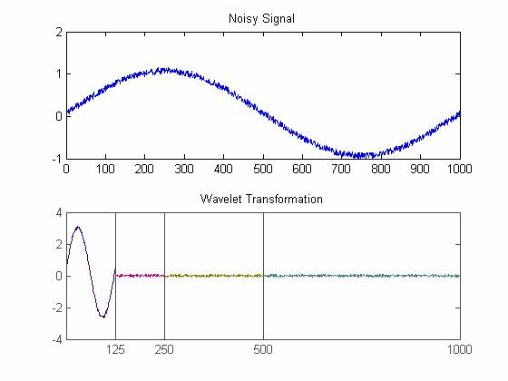

| DiscreteWavelets Toolbox |
SureShrink tolerance value
lambda = DonohoSure(v)
lambda=DonohoSure(v) takes as input a matrix or vector v and returns the value lambda that is to be used with the ShrinkageFunction to perform denoising via the Wavelet Shrinkage method (See Chapter 9).
The M-File is based on the function ValSUREThresh.m from the Wavelab Toolbox created by David Donoho, Iain Johnstone, et. al., at Stanford University. More information is available online at WaveLab850.
Add noise to sin(x) and then compute its wavelet transformation.
x=0:.001:.999; v=sin(2*pi*x)+.15*rand(1,1000); %create the noisy curve plot(v); %Plot the graph wt=WT1D(v,Coif(1),3); %Compute three iterations of the wavelet transformation

Now compute the value to use for SureShrink:lambda=DonohoSure(wt) %Compute the SureShrink toleranceThe result is
lambda =
0.2711
ShrinkageFunction, TestSparseness, NoiseEstimate, UniversalThreshold, SureShrink, WaveletShrinkage
© 2007-2008 Patrick Van Fleet